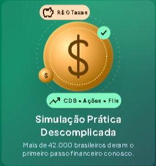

Reserva de emergência
Calcule o valor ideal para planejar de 3 a 12 meses de suas despesas com segurança.
90% das pessoas perdem poder de compra todos os anos por não saber de conhecimento prático. No Invest Fácil, você descobre as melhores oportunidades para fazer cada centavo trabalhar para o seu futuro, sem medo.

Calcule o valor ideal para planejar de 3 a 12 meses de suas despesas com segurança.
Entenda na prática a diferença entre renda fixa, fundos imobiliários e renda variável.
Planeje o futuro com métodos testados e livres de jargões financeiros.
O Invest Fácil acompanha sua jornada desde os primeiros passos até decisões mais conscientes. Explore conteúdos práticos para entender como seu dinheiro pode trabalhar para você.
Explore conteúdos organizados para desenvolver sua compreensão do mercado financeiro.
Compreenda conceitos essenciais de economia e como eles influenciam o seu dia a dia, como inflação, juros e o funcionamento do mercado.
Entenda os investimentos de renda fixa e compare suas características antes de escolher onde investir.
Conheça formas de proteger seu dinheiro da inflação e entenda as características de investimentos atrelados ao IPCA.
Conheça ações e os principais fatores para estudar uma empresa antes de investir.
Entenda como funcionam os fundos imobiliários e os riscos envolvidos nesse tipo de investimento.
Compare estratégias e aprenda a considerar seus objetivos antes de tomar decisões.
Experimente diferentes valores e prazos para entender o efeito dos juros compostos. É uma estimativa educativa, não uma promessa de rendimento.
Dica Invest Fácil
Consistência importa. Simule contribuições que façam sentido para seu orçamento.
Simulação ilustrativa com taxa constante, sem considerar impostos, taxas ou inflação. Rentabilidade real pode variar e não é garantida.
Pesquise um termo e entenda o que ele significa na prática.
Uma taxa de referência muito usada para comparar o rendimento de investimentos de renda fixa.
É a taxa básica de juros da economia brasileira, definida pelo Banco Central.
O Fundo Garantidor de Créditos pode cobrir determinados depósitos e investimentos elegíveis, dentro dos limites e regras vigentes.
É a facilidade e a rapidez com que um investimento pode ser convertido em dinheiro disponível.
São juros calculados sobre o valor inicial e também sobre os juros acumulados anteriormente.
É distribuir os investimentos entre diferentes ativos para evitar concentrar todo o risco em um só lugar.
Aprenda, planeje e faça escolhas mais conscientes.